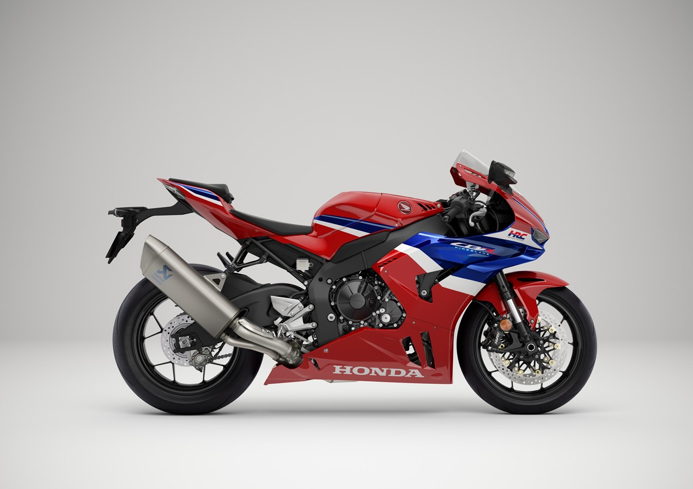
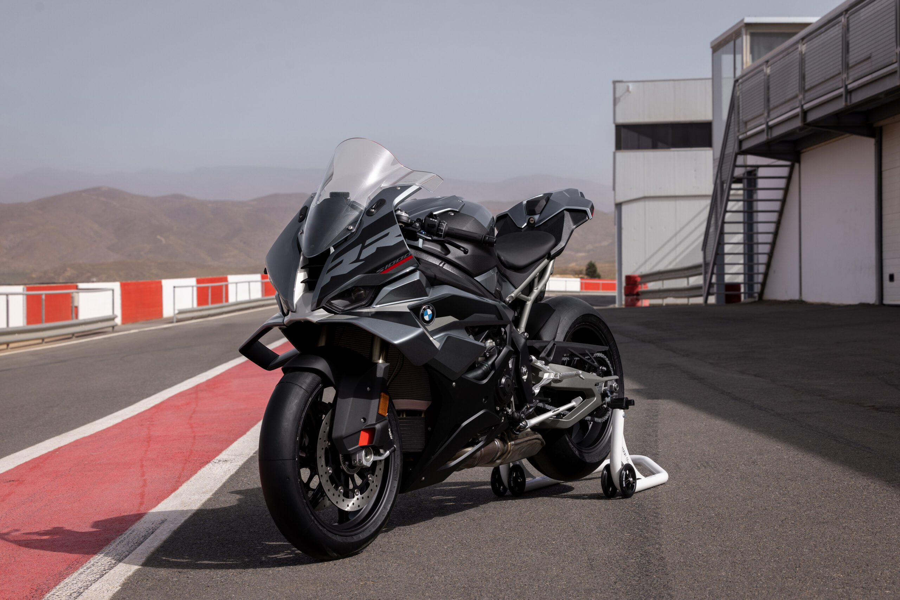

| Bike Name |
|---|
| Yamaha R1 |
| Honda CBR1000RR |
| BMW S1000RR |
Yamaha R1: The Yamaha R1 is a high-performance sportbike that boasts a powerful engine and advanced technology, making it perfect for track days and spirited rides. With its sleek design and agile handling, the R1 delivers an exhilarating riding experience for enthusiasts who crave speed and precision.
.jpg)
Honda CBR1000RR: The Honda CBR1000RR, also known as the Fireblade, is renowned for its balance of power and handling. It features a responsive inline-four engine, making it ideal for both the racetrack and daily commutes. Riders appreciate its reliability and comfort during long rides, making it a versatile choice for sportbike lovers. 
BMW S1000RR: The BMW S1000RR is a revolutionary sportbike that combines cutting-edge technology with unmatched performance. It’s designed for speed and agility, making it a top choice for riders looking to conquer racetracks. Its sophisticated electronics enhance safety and control, ensuring a thrilling ride for experienced motorcyclists. 
“If you want to be happy for a day, drink. If you want to be happy for a year, marry. If you want to be happy for a lifetime, ride a motorcycle.”- Anonymous